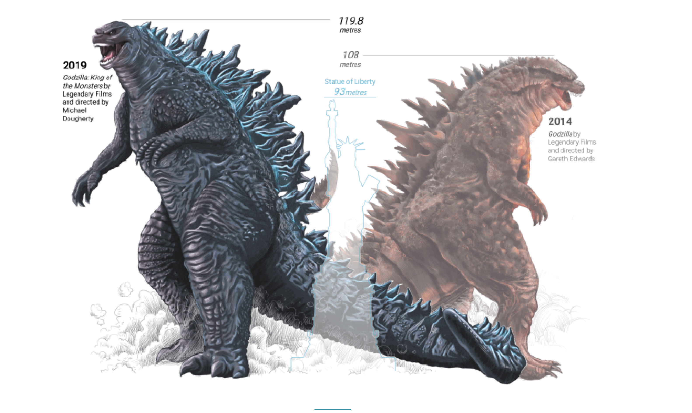
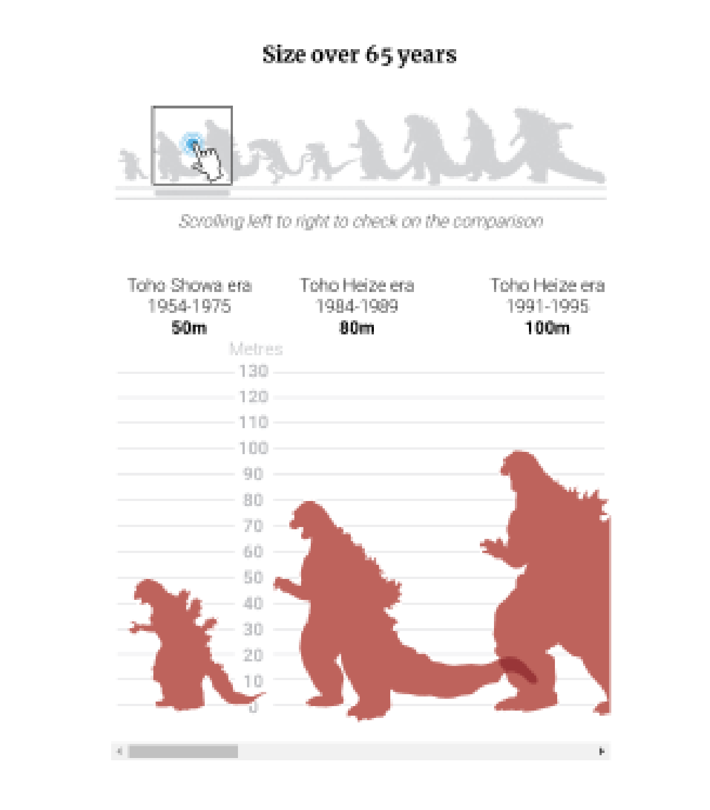
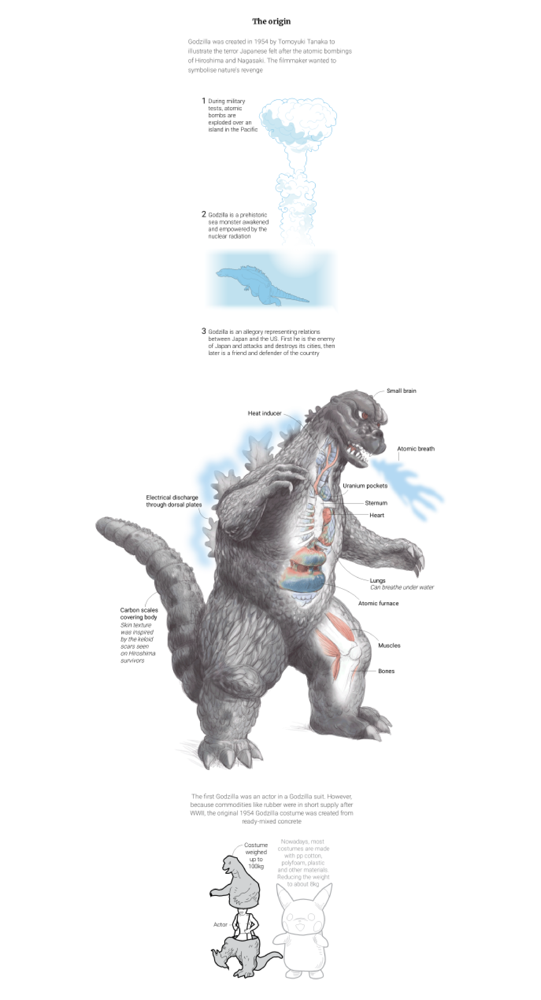

INFOGRAFÍA IMPRESA
La infografía impresa tiene un título, una bajada, 2 ilustraciones principales, una serie de dibujos de tamaño mediano, ubicado en la parte inferior y grupos de gráficos pequeños que entregan detalles sobre el personaje Godzilla. Los gráficos están acompañados de bloques de texto para aclarar y profundizar la información.

El primer gráfico grande son dos ilustraciones que ocupan gran parte de la infografía, corresponden a un gráfico figurativo, y ambas muestran cómo se veían diferentes versiones de la criatura en el año 1954, su primera versión, y en el 2014, la cual es una de las más recientes.
El segundo gráfico grande corresponde a 7 dibujos de los enemigos de Godzilla y son gráficos figurativos ya que nos muestran su aspecto.
El primer grupo de gráficos pequeños, los cuales son figurativos, entregan detalles sobre el origen del personaje, en que tuvo inspirado, cómo surge dentro de la historia y cómo era representado en la primera película.
El segundo grupo de gráficos pequeños, son no figurativos y realizan una comparación del tamaño de Godzilla en sus distintas versiones y la cantidad de producciones realizadas según país. En ambos gráficos se utiliza el mismo código de color donde el rojo representa a Japón y el verde a USA.
INFOGRAFÍA DIGITAL
Después de la introducción, se muestra dos ilustraciones de Godzilla comparadas con el tamaño de la estatua de la libertad. A diferencia de la versión análoga, se puede apreciar mejor los detalles del dibujo y el lector puede hacerse una idea de la magnitud del monstruo.
El segundo gráfico es interactivo, compara los tamaños de Godzilla en cada producción, en un orden temporal. Para poder ver todas las versiones, el lector debe interactuar con una barra.
El tercer gráfico es una serie de ilustraciones que exponen cómo era Godzilla en sus inicios, de donde nació la idea de la criatura y como esta era interpretada en las películas. La ilustración tiene formato gif lo cual le permite crear movimiento.
El último gráfico es una línea de tiempo vertical que expone las películas de Godzilla de forma cronológica junto a su respectivo póster. Este gráfico no se muestra en la versión impresa, probablemente porque es de gran tamaño. Esto demuestra una de las ventajas que se tiene en el formato digital.

Al momento de diseñar las dos versiones, se toma en cuenta las ventajas y desventajas que tiene cada una de ellas. Por ejemplo, la impresa permite ver la infografía como un todo, tratando cada gráfico como un conjunto y no individualmente. Esto permite jugar con la diagramación y crear una pieza interesante y estética. A diferencia del formato digital, el cual puede tener una extensión más larga y las herramientas digitales permiten generar movimiento e interacción.